# load packages
library(tidyverse)
library(tidymodels)
library(knitr)
library(patchwork)
library(viridis)
# set default theme in ggplot2
ggplot2::theme_set(ggplot2::theme_bw())Model conditions + diagnostics
Announcements
HW 02 due TODAY at 11:59pm
Lab 03 due Thursday, February 12 at 11:59pm
Exam 01 resources
Prepare readings (see course schedule)
Lecture notes
AEs
Lab and HW assignments
Computing set up
Topics
Review AE 06
Model conditions
Influential points
Model diagnostics
Leverage
Studentized residuals
Cook’s Distance
Review: AE 06
Permutation sampling in MLR
In the last lecture, we talked about two different ways to permute data when conducting a permutation test for multiple linear regression. Choose the response that best describes how the structure of the data is changed with each method.
Permutation illustrated
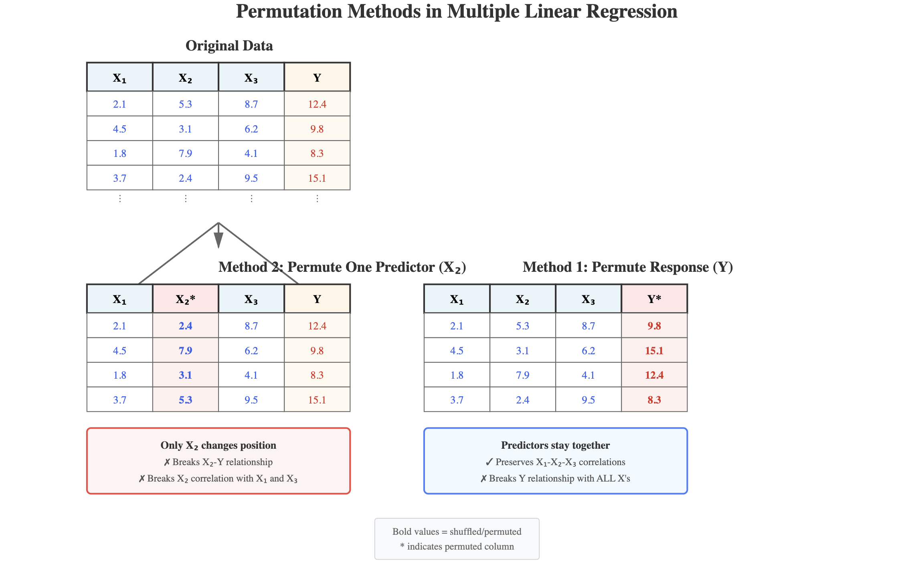
Generate from Claude AI Sonnet 4.5 using the prompt: “Please draw a picture illustrating permuting the response variable versus permuting individual predictor variables.”
Data: Duke lemurs
Today’s data contains a subset of the original Duke Lemur data set available in the TidyTuesday GitHub repo. This data includes information on lemurs age 25 months or young from who were at the Duke Lemur Center when they were measured.
The goal of the analysis is to use the age, sex, taxon, and litter size of the lemurs to understand variability in the weight.
Rows: 252 Columns: 8
── Column specification ────────────────────────────────────────────────────────
Delimiter: ","
chr (3): name, sex, taxon
dbl (4): dlc_id, litter_size, age, weight
date (1): dob
ℹ Use `spec()` to retrieve the full column specification for this data.
ℹ Specify the column types or set `show_col_types = FALSE` to quiet this message.Variables
weight: Weight: Animal weight, in grams. Weights under 500g generally to nearest 0.1-1g; Weights >500g generally to the nearest 1-20g.sex: Sex of lemur (M: Male,F: Female)age: Age of lemur when weight was recorded (in months)litter_size: Total number of infants in the litter the lemur was born into (this includes the observed lemur)
Variables
taxon: Code made as a combination of the lemur’s genus and species. Note that the genus is a broader categorization that includes lemurs from multiple species. This analysis focuses on the following taxon:ERUF: Eulemur rufus, commonly known as Red-fronted brown lemurPCOQ: Propithecus coquereli, commonly known as Coquerel’s sifakaVRUB: Varecia rubra, commonly known as Red ruffed lemur
Bivariate EDA
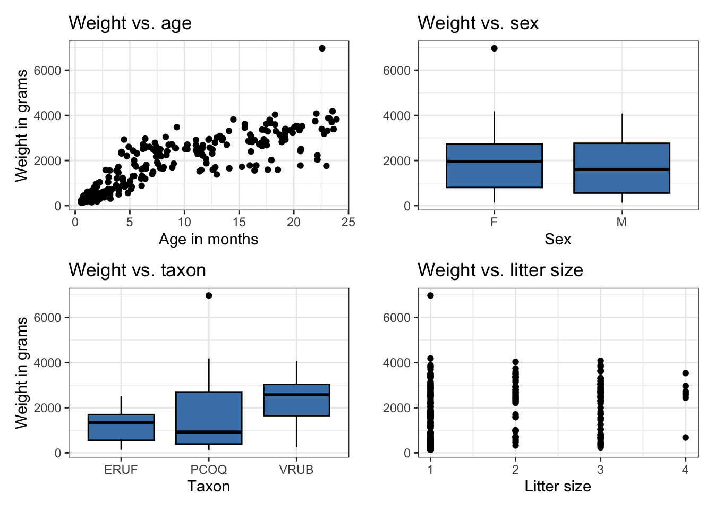
Fit model
lemurs_fit <- lm(weight ~ age + sex + taxon + litter_size, data = lemurs)
tidy(lemurs_fit) |>
kable(digits = 3)| term | estimate | std.error | statistic | p.value |
|---|---|---|---|---|
| (Intercept) | 43.844 | 121.715 | 0.360 | 0.719 |
| age | 136.903 | 4.858 | 28.182 | 0.000 |
| sexM | -88.838 | 68.001 | -1.306 | 0.193 |
| taxonPCOQ | 471.715 | 95.430 | 4.943 | 0.000 |
| taxonVRUB | 1037.323 | 133.906 | 7.747 | 0.000 |
| litter_size | -19.607 | 65.797 | -0.298 | 0.766 |
Model conditions
Assumptions for regression
\[ Y|X_1, \ldots, X_p \sim N(\beta_0 + \beta_1X_1 + \dots + \beta_pX_p, \sigma_\epsilon^2) \]
- Linearity: There is a linear relationship between the response and predictor variables.
- Equal variance: The variability about the least squares line is equal for all combinations of predictors.
- Normality: The distribution of the errors (residuals) is approximately normal.
- Independence: The errors (residuals) are independent from one another.
. . .
How do we know if these assumptions hold in our data?
Linearity
- Look at plot of residuals versus fitted (predicted) values.
- Linearity is satisfied if there is no discernible pattern in the plot (i.e., points randomly scattered around \(\text{residuals} = 0\))
. . .
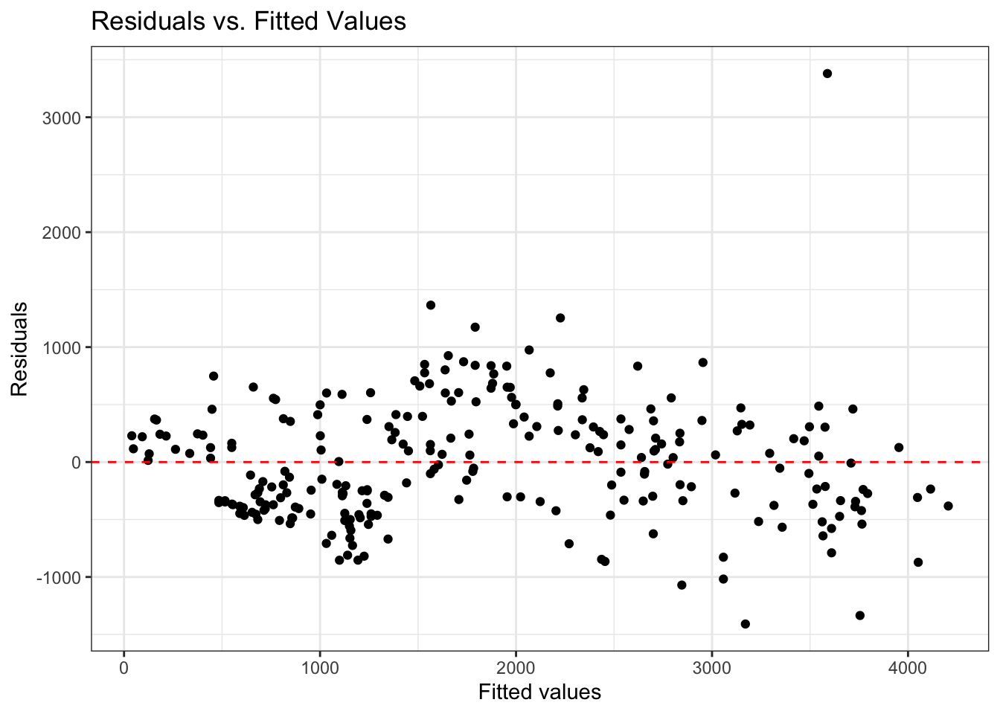
. . .
Residuals vs. predictors
If we need a closer look at the linearity condition, we can plot the residuals versus each quantitative predictor.
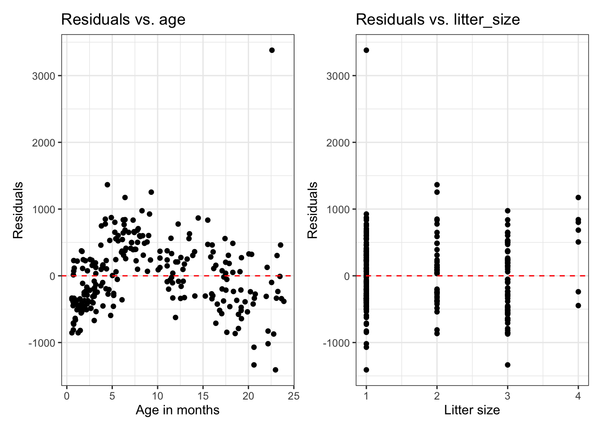
Example: Linearity not satisfied
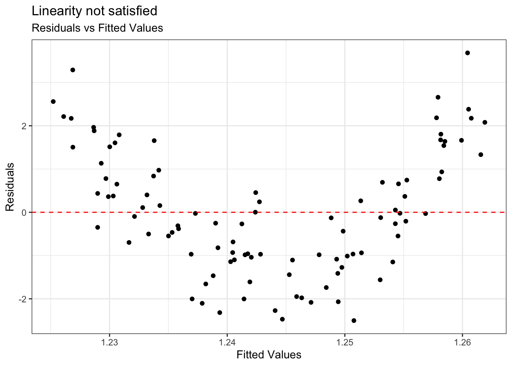
. . .
- If linearity is not satisfied, examine the plots of residuals versus each predictor.
- Add higher order term(s), as needed.
Equal variance
- Look at plot of residuals versus fitted (predicted) values.
- Equal variance is satisfied if the vertical spread of the points is approximately equal for all fitted values
. . .
. . .
Example: Equal variance not satisfied
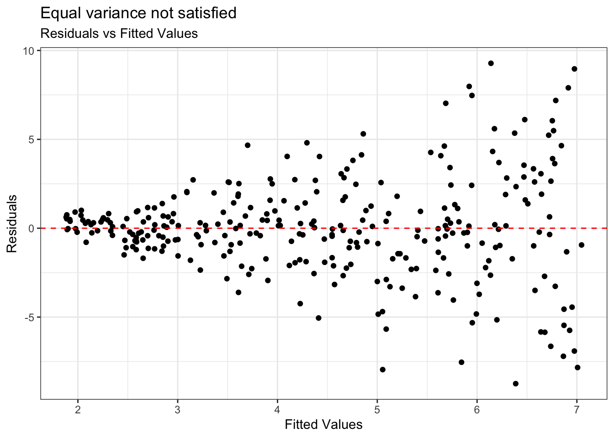
. . .
Condition is critical for inference
Address violations by applying transformation on the response
Normality
- Look at the distribution of the residuals
- Normality is satisfied if the distribution is approximately unimodal and symmetric. Inference robust to violations if \(n > 30\)
`stat_bin()` using `bins = 30`. Pick better value `binwidth`.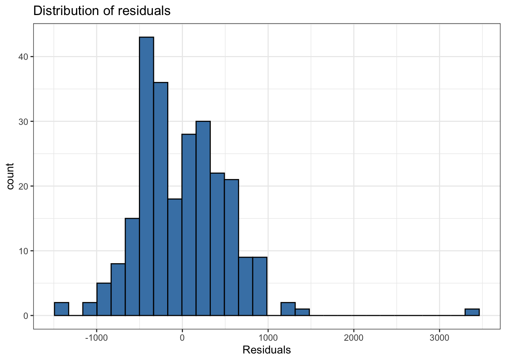
. . .
Independence
We can often check the independence condition based on the context of the data and how the observations were collected.
If the data were collected in a particular order, examine a scatterplot of the residuals versus order in which the data were collected.
If data has spatial element, plot residuals on a map to examine potential spatial correlation.
If there are subgroups in the data, plot the residuals by subgroup
Independence
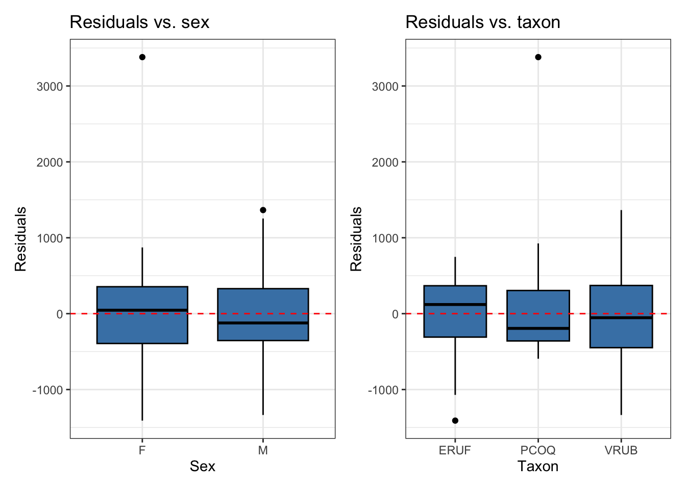
What conditions are needed?
| Model condition | Interpret and predict | Simulation-based inference | Theory-based inference |
|---|---|---|---|
| Linearity | Important | Important | Important |
| Independence | Not needed | Important | Important |
| Normality | Not needed | Not needed | Not needed if \(n >> 30\) Important if \(n < 30\) |
| Equal variance | Not needed | Not needed | Important |
Model diagnostics
Model diagnostics
lemurs_aug <- augment(lemurs_fit)
lemurs_aug |> slice(1:10)# A tibble: 10 × 11
weight age sex taxon litter_size .fitted .resid .hat .sigma .cooksd
<dbl> <dbl> <chr> <chr> <dbl> <dbl> <dbl> <dbl> <dbl> <dbl>
1 410 2.27 F ERUF 1 335. 75.0 0.0277 534. 0.0000968
2 137 0.72 F ERUF 1 123. 14.2 0.0298 534. 0.00000374
3 206 0.69 F PCOQ 1 590. -384. 0.0201 533. 0.00182
4 185 1.05 M PCOQ 1 551. -366. 0.0183 533. 0.00150
5 373 2.66 F PCOQ 1 860. -487. 0.0178 533. 0.00257
6 200 0.76 F ERUF 1 128. 71.7 0.0297 534. 0.0000953
7 1861 9.01 F ERUF 1 1258. 603. 0.0234 533. 0.00525
8 1634 8.02 M ERUF 1 1033. 601. 0.0272 533. 0.00609
9 636 2.76 F ERUF 1 402. 234. 0.0272 534. 0.000921
10 373 1.74 F ERUF 1 262. 111. 0.0284 534. 0.000216
# ℹ 1 more variable: .std.resid <dbl>Model diagnostics in R
Use the augment() function in the broom package to output the model diagnostics (along with the predicted values and residuals)
- response and predictor variables in the model
.fitted: predicted values.se.fit: standard errors of predicted values.resid: residuals.hat: leverage.sigma: estimate of residual standard deviation when the corresponding observation is dropped from model.cooksd: Cook’s distance.std.resid: standardized residuals
Influential Point
An observation is influential if removing has a noticeable impact on the regression coefficients
`geom_smooth()` using formula = 'y ~ x'
`geom_smooth()` using formula = 'y ~ x'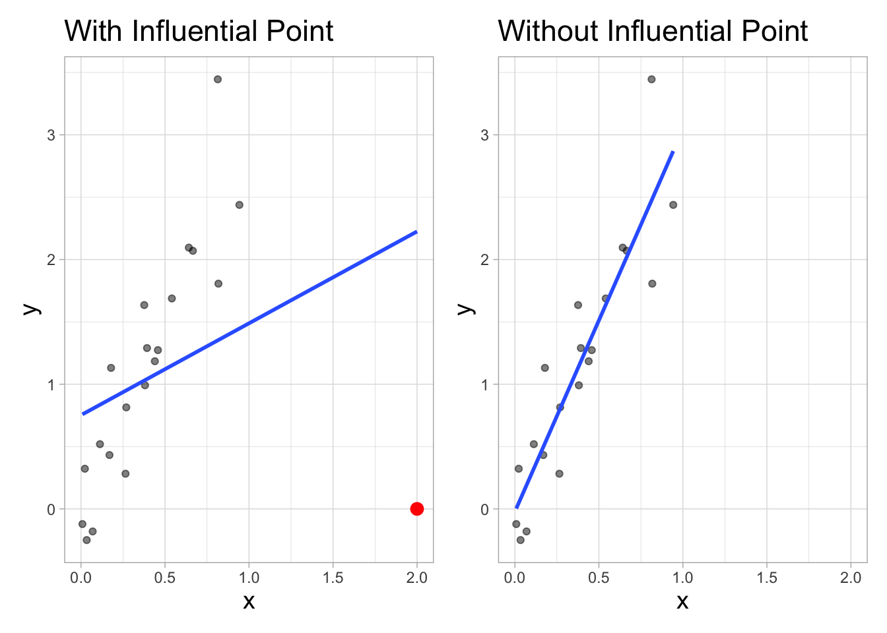
Influential points
- Influential points have a noticeable impact on the coefficients and standard errors used for inference
- These points can sometimes be identified in a scatterplot if there is only one predictor variable
- This is often not the case when there are multiple predictors
- We will use measures to quantify an individual observation’s influence on the regression model
- leverage, standardized & studentized residuals, and Cook’s distance
Leverage
Leverage
Leverage \((h_i)\) : a measure of the distance of the predictor (or combination of predictors) for the \(i^{th}\) observation is from the mean value of the predictor (or combination of predictors)
For simple linear regression:
\[ h_i = \frac{1}{n} + \frac{(x_i - \bar{x})^2}{\sum_{j = 1}^n(x_j - \bar{x})^2} \]
- Observations with large values of \(h_{i}\) are far away from the typical value (or combination of values) of the predictors in the data
See Appendix A.4 for math details of leverage in multiple linear regression.
Large leverage
The sum of the leverages for all points is \(p + 1\), where \(p\) is the number of predictors in the model
The average value of leverage is \(\bar{h} = \frac{(p+1)}{n}\)
An observation has large leverage if \[h_{i} > \frac{2(p+1)}{n}\]
Lemurs: Leverage
h_threshold <- 2 * (5 + 1) / nrow(lemurs)
h_threshold[1] 0.04761905. . .
lemurs_aug |>
filter(.hat > h_threshold)# A tibble: 13 × 11
weight age sex taxon litter_size .fitted .resid .hat .sigma .cooksd
<dbl> <dbl> <chr> <chr> <dbl> <dbl> <dbl> <dbl> <dbl> <dbl>
1 2605 4.9 F VRUB 1 1732. 873. 0.0563 531. 0.0282
2 2574 12.3 M VRUB 1 2657. -82.6 0.0503 534. 0.000224
3 2502. 10.3 M VRUB 1 2377. 124. 0.0502 534. 0.000503
4 2076 12.0 F VRUB 1 2700. -624. 0.0520 532. 0.0132
5 3532 20.2 F VRUB 4 3771. -239. 0.0520 534. 0.00194
6 3804 17.8 F VRUB 1 3497. 307. 0.0547 534. 0.00339
7 1589 18.5 M ERUF 2 2454. -865. 0.0504 531. 0.0246
8 3010 13.0 F VRUB 1 2834. 176. 0.0521 534. 0.00105
9 2550 11.6 F VRUB 1 2655. -105. 0.0520 534. 0.000375
10 440 0.76 F VRUB 1 1166. -726. 0.0626 532. 0.0220
11 680 1.55 M VRUB 4 1126. -446. 0.0485 533. 0.00625
12 3820 14.5 M VRUB 1 2954. 866. 0.0513 531. 0.0251
13 617 1.12 M VRUB 1 1126. -509. 0.0579 533. 0.00993
# ℹ 1 more variable: .std.resid <dbl>Let’s look at the data
`stat_bin()` using `bins = 30`. Pick better value `binwidth`.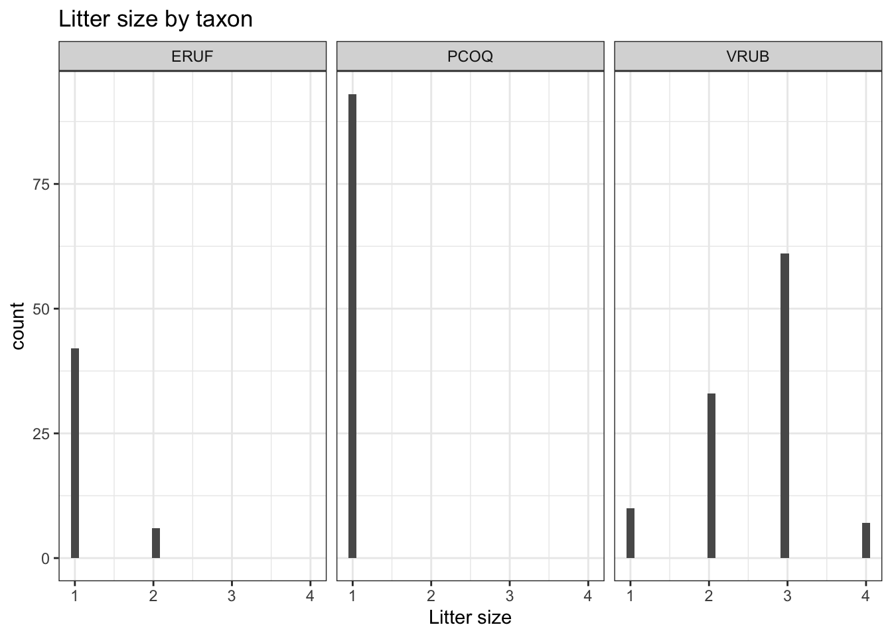
The high leverage points are primarily VRUB lemurs with no siblings.
Large leverage
If there is point with high leverage, ask
❓ Is there a data entry error?
❓ Is this observation within the scope of individuals for which you want to make predictions and draw conclusions?
❓ Is this observation impacting the estimates of the model coefficients? (Need more information!)
. . .
Just because a point has high leverage does not necessarily mean it will have a substantial impact on the regression. Therefore we need to check other measures.
Scaled residuals
Scaled residuals
What is the best way to identify outlier points that don’t fit the pattern from the regression line?
- Look for points that have large residuals
We can rescale residuals and put them on a common scale to more easily identify “large” residuals
We will consider two types of scaled residuals: standardized residuals and studentized residuals
Standardized residuals
The variance of the residuals can be estimated by the mean squared residuals (MSR) \(= \frac{SSR}{n - p - 1} = \hat{\sigma}^2_{\epsilon}\)
We can use MSR to compute standardized residuals
\[ std.res_i = \frac{e_i}{\hat{\sigma}_{\epsilon}} \]
Standardized residuals are produced by
augment()in the column.std.resid
Using standardized residuals
We can examine the standardized residuals directly from the output from the augment() function

- An observation is a potential outlier if its standardized residual is beyond \(\pm 3\)
Digging in to the data
Let’s look at the value of the response variable to better understand potential outliers
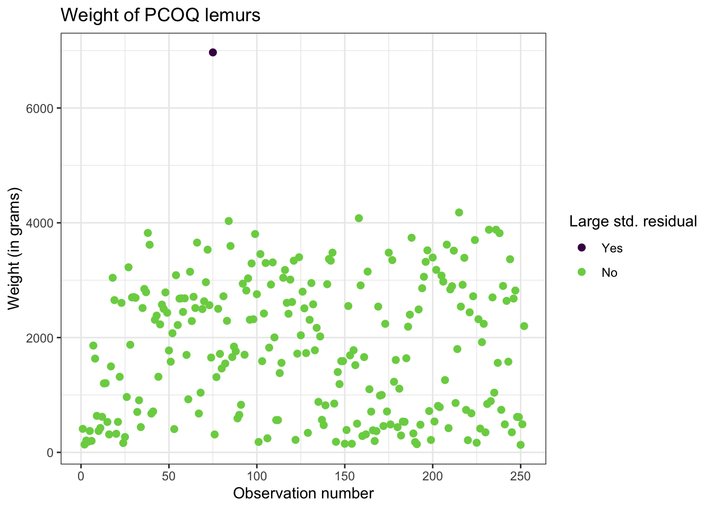
Studentized residuals
MSR is an approximation of the variance of the residuals.
A more precise calculation of the variance for the \(i^{th}\) residual is is \(Var(e_i) = \hat{\sigma}^2_{\epsilon}(1 - h_{i})\)
- This is called the studentized residual
\[ r_i = \frac{e_{i}}{\sqrt{\hat{\sigma}^2_{\epsilon}(1 - h_{i})}} \]
- Standardized and studentized residuals provide similar information about which points are outliers in the response.
- Studentized residuals are used to compute Cook’s Distance
Cook’s Distance
Motivating Cook’s Distance
An observation’s influence on the regression line depends on
How close it lies to the general trend of the data
Its leverage
Cook’s Distance is a statistic that includes both of these components to measure an observation’s overall impact on the model
Cook’s Distance
Cook’s distance for the \(i^{th}\) observation is
\[ D_i = \frac{r^2_i}{p + 1}\Big(\frac{h_{i}}{1 - h_{i}}\Big) \]
where \(r_i\) is the studentized residual and \(h_{i}\) is the leverage for the \(i^{th}\) observation
. . .
This measure is a combination of
How well the model fits the \(i^{th}\) observation (magnitude of residuals)
How far the combination of predictors for the \(i^{th}\) observation is from the rest of the observations
Using Cook’s Distance
An observation with large value of \(D_i\) is said to have a strong influence on the predicted values
General thresholds .An observation with
\(D_i > 0.5\) is moderately influential
\(D_i > 1\) is very influential
Cook’s Distance
Cook’s Distance is in the column .cooksd in the output from the augment() function
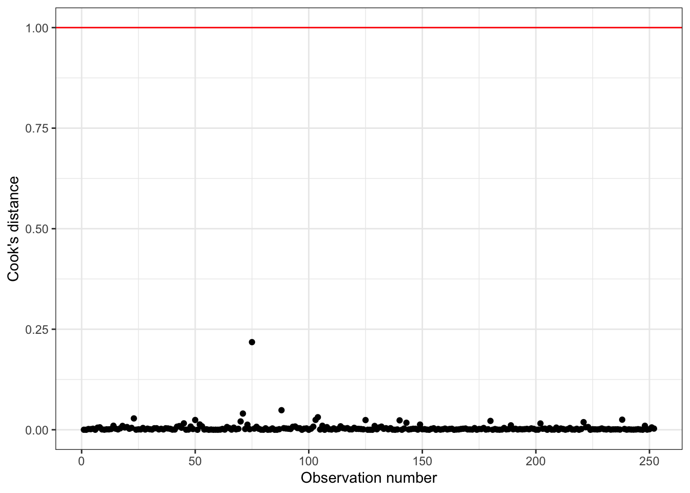
Using these measures
Standardized residuals, leverage, and Cook’s Distance should all be examined together
Examine plots of the measures to identify observations that are outliers, high leverage, and may potentially impact the model.
What to do with outliers/influential points?
First consider if the outlier is a result of a data entry error.
If not, you may consider dropping an observation if it’s an outlier in the predictor variables if…
It is meaningful to drop the observation given the context of the problem
You intended to build a model on a smaller range of the predictor variables. Mention this in the write up of the results and be careful to avoid extrapolation when making predictions
What to do with outliers/influential points?
It is generally not good practice to drop observations that ar outliers in the value of the response variable
These are legitimate observations and should be in the model
You can try transformations or increasing the sample size by collecting more data
A general strategy when there are influential points is to fit the model with and without the influential points and compare the outcomes
Recap
Introduced model conditions for linear regression
Defined influential points
Introduced model diagnostics for linear regression
Leverage
Studentized residuals
Cook’s Distance
Next class
Exam 01 review
No prepare assignment